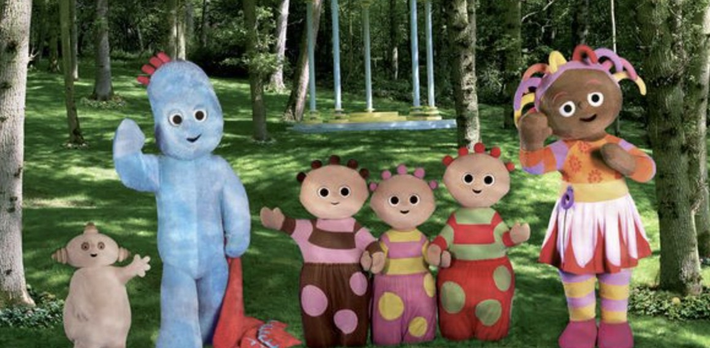

Gece Bahçesi
Gece Bahçesi, 2000'li yılların başında Türkiye'de yayınlanan popüler bir çocuk çizgi filmidir. Çizgi film, gece vakti canlanan oyuncakların ve nesnelerin maceralarını konu alır. Ana karakterler arasında oyuncak ayı, robot, bebek ve diğer çeşitli oyuncaklar bulunur.
Gece Bahçesi, gece vakti canlanan oyuncakların ve nesnelerin maceralarını konu alır. Ana karakterler arasında oyuncak ayı, robot, bebek ve diğer çeşitli oyuncaklar bulunur.
Sizler de bu keyifli ve eğlence dolu çizgi filmi rahatlıkla çocuklarınıza izletebilirsiniz.